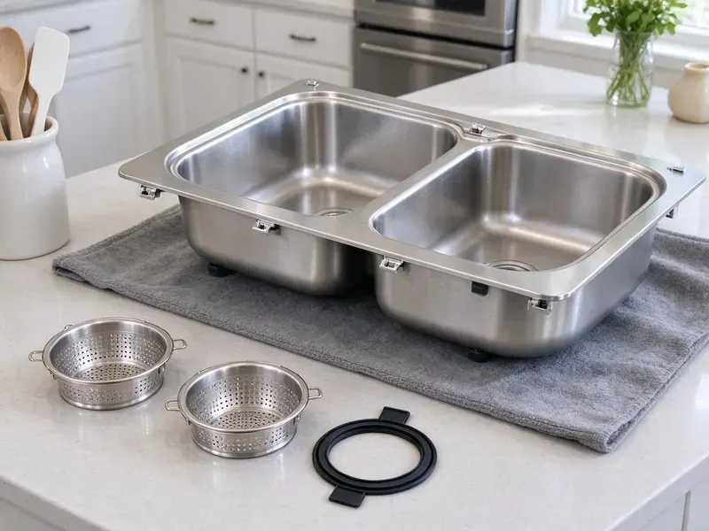

Grease Trap Installation in Madison, WI
Opening or remodeling a kitchen in Madison, WI? We size, set and connect grease interceptors that pass inspection the first time.
- Fast, Reliable Service
- Experienced Local Plumbers
- Upfront Pricing
- Free Estimates Available
Need Grease Trap Installation in Madison, WI?
Our team is ready to provide a quick and accurate quote for your installation project.
Expert Grease Trap Installation Services in Madison, WI
HKV Plumbing helps new restaurant owners and established operators meet local pretreatment requirements. We handle sizing, permits, excavation when needed and final inspection so your kitchen can open on schedule.
Our expertise includes:
- Commercial kitchen plumbing specialists
- All grease trap sizes and types
- Preventative solutions for FOG (fats, oils, greases)

Additional Kitchen Plumbing Services in Madison, WI
Our kitchen plumbing services in Madison, WI cover sinks, disposals, dishwashers, and grease traps so your kitchen keeps running without backups or leaks.


Customers
Why Choose HKV Plumbing for Grease Trap Installation in Madison, WI?
Choosing the right plumbing company for grease trap installation is important for long-term reliability and compliance. Our team has broad experience with the specific requirements and challenges of commercial kitchen plumbing systems.
- Code Compliant, Each install includes the venting, flow control and access required by local plumbing code.
- Code Compliance, We make sure all installations adhere strictly to Madison and Wisconsin plumbing codes, preventing fines and operational disruptions.
- Odor Control, Properly sealed and maintained grease traps significantly reduce unpleasant odors common in commercial kitchens.
Citywide Coverage
No matter where your commercial kitchen is located in Madison, our team is equipped to provide prompt and professional grease trap installation services. We understand the local infrastructure and specific requirements for businesses throughout Madison.
Experienced Team
Each HKV Plumbing technician working on your grease trap installation in Madison is a seasoned professional. They understand the intricacies of commercial plumbing and are committed to delivering high-quality, durable solutions.
Safety-First Approach
Outdoor interceptors are installed with traffic-rated lids where needed and backfilled to prevent settling. We locate buried utilities before any excavation and keep the site safe for staff and guests.
Trusted Certified Madison Plumbing Services Professionals
At HKV Plumbing, we take pride in providing certified plumbing services throughout Madison, WI. Backed by recognized industry credentials, our experienced plumbers combine technical skill with genuine customer care. Whether it is repair, installation, or maintenance, we follow strict safety and quality standards to deliver long-lasting results you can trust.
Call Us Now PHCC Plumbing Contractor Recognition
PHCC Plumbing Contractor Recognition Better Business Bureau (BBB) Accreditation
Better Business Bureau (BBB) Accreditation Angi Certified Pro
Angi Certified Pro ISO 9001 Quality Management Certification
ISO 9001 Quality Management CertificationReliable Grease Trap Installation Services in Madison, WI
Grease Trap Installation Cost in Madison, WI
Small under-sink hydromechanical traps generally cost much less to install than large outdoor interceptors. Indoor units are usually a few thousand dollars installed, while in-ground interceptors can run well into five figures with excavation and concrete work. Pricing depends on unit size, location, soil conditions and whether we need to cut and patch floors. We give you a written estimate that includes permits and inspection. That way there are no surprises during construction.

Food Truck Commissary and Ghost Kitchen Traps in Madison, WI
Commissary kitchens and ghost kitchens often have several prep stations and heavy dishwashing loads. We design grease trap installs that handle high flow from multiple sinks and dish machines. Each unit is sized for the combined discharge, not just one fixture. We also install cleanouts and sample ports where the city requires them. This keeps shared kitchens compliant for each tenant.
Commercial Grease Trap Installation in Madison
For restaurants, cafeterias, and any food service business in Madison, a well-functioning grease trap is non-negotiable. We specialize in installing commercial-grade grease traps designed to handle high volumes of FOG, making sure your kitchen operates smoothly and compliantly. Our installations are matched to the specific needs and capacity requirements of your establishment, preventing costly backups and environmental issues.
New Restaurant Build-Out Grease Traps in Madison
If you are opening a new restaurant, the grease trap is often a key part of plan review. We work with your architect or contractor to size the unit and show it on plumbing plans. We then install it during rough-in so it is ready for inspection. Getting the trap right early avoids expensive changes after the slab is poured. We also coordinate with the city's pretreatment staff when they require a review.
Restaurant Grease Trap Compliance in Madison, WI
Making sure your restaurant's grease trap system in Madison, WI meets all local and state plumbing and environmental codes is crucial. HKV Plumbing is familiar with Wisconsin regulations concerning FOG discharge and commercial kitchen waste. We guarantee that every grease trap installation we perform is fully compliant, helping you avoid penalties and maintain a clean, responsible operation.
Large Outdoor Grease Interceptor Installation in Madison
For high-volume commercial kitchens in Madison, large outdoor grease interceptors are often required by code. These substantial units are installed underground and designed to manage significant amounts of FOG before wastewater enters the municipal sewer system. We handle the entire process, including excavation, precise placement, connection, and final inspection, ensuring a robust and compliant installation.
Zurn Grease Trap Installation in Madison
Zurn is a respected brand for reliable plumbing fixtures, including grease interceptors. HKV Plumbing is experienced in installing various Zurn grease trap models, from compact under-sink units to larger capacity models for busy kitchens. We ensure each Zurn product is installed according to manufacturer specifications and local codes, providing a durable and effective solution for your FOG management in Madison.

Replacement & Upgrade Services in Madison, WI
If your existing grease trap in Madison, WI is old, inefficient, or no longer meets current codes, HKV Plumbing provides professional replacement and upgrade services. We can evaluate your current system, recommend modern, more efficient alternatives, and perform a seamless removal and installation. Upgrading your grease trap can significantly improve performance, reduce maintenance needs, and ensure long-term compliance.
Grease Trap Installation Near Me in Madison, WI
Restaurant owners looking for grease trap installation near me can count on our local commercial team. We understand local pretreatment rules and the inspection process. That local knowledge helps your project move along quickly.
Don't let FOG cause a major headache for your commercial kitchen. For reliable grease trap installation near me, call HKV Plumbing today. We offer transparent pricing, professional service, and a commitment to helping Madison businesses maintain compliant and functional plumbing systems.
HKV Plumbing at a Glance
- Licensed and insured plumbers serving Madison, WI
- 24/7 emergency service with same-day scheduling
- Clear written estimates, no hidden fees
- 4.8-star rated by 448+ Wisconsin customers
Madison Map
Madison Information
- Population
- 280,305
- Area codes
- 608/920/262
- Service area
- Madison and communities within 40 miles
- Nearby
- Janesville, Waukesha, Wauwatosa, West Allis
Municipal pretreatment rules and high restaurant volume make careful sizing and sound installation of grease interceptors essential for food businesses in Madison, WI. Full basements are standard in Wisconsin homes, and sump pumps are common where clay or high groundwater holds water near the foundation.
Expert Services
Trust our professionals for reliable HKV Plumbing solutions in Madison, WI.
Our Specialized Plumbing Services in Madison, WI
At HKV Plumbing, we provide a complete range of plumbing services across Madison, WI. From leak detection to full system installations, our team ensures fast, precise, and affordable service for both residential and commercial properties. Explore our core services below:


How Our Grease Trap Installation Process Works in Madison, WI
Our simple process ensures your new grease trap is installed efficiently and correctly, minimizing disruption to your business in Madison.
Request a Quote
Call (414) 432-4641 and tell us about your kitchen, fixtures and timeline. We schedule a site visit to measure, review plans and confirm local requirements.
Size and Permit
We calculate flow rates, choose the right trap or interceptor and prepare any permit documents. Then we set an install date that works around your service hours.
Install and Inspect
Our crew sets the unit, connects inlet and outlet piping, adds venting and flow control and tests the system. We meet the inspector and walk your staff through cleaning access.
Frequently Asked Questions About Grease Trap Installation in Madison
Small indoor hydromechanical traps usually cost $1,500 to $5,000 installed. Large outdoor gravity interceptors often run $8,000 to $30,000 or more with excavation, concrete and site restoration. We provide a written estimate after a site visit.
We install all common types of grease traps, including gravity grease interceptors, hydro-mechanical grease traps (automatic grease removal units), and compact under-sink grease traps. Our team helps you determine the best system for your commercial kitchen's specific needs and local code requirements.
We calculate flow from every connected fixture, including sinks, floor sinks and dish machines. Hydromechanical units are usually rated by gallons per minute, while gravity interceptors are sized by volume and retention time.
While the terms are often used interchangeably, 'grease trap' usually refers to smaller, indoor hydro-mechanical units, often found under sinks. 'Grease interceptor' usually refers to larger, outdoor gravity-fed units with higher capacities. Both serve the same purpose of separating FOG from wastewater.
Signs you might need a new grease trap include frequent sewer backups, persistent foul odors coming from drains, slow drainage throughout your kitchen, or if your current unit is visibly corroded or leaking. If your existing trap is old and no longer meets current local codes in Madison, an upgrade is also advisable.
Yes, commercial grease trap and interceptor installations generally require a plumbing permit and inspection. Some cities also require approval from their pretreatment or wastewater department.
Grease trap installation is a complex commercial plumbing task that requires specialized knowledge, tools, and adherence to strict local codes. Attempting a DIY installation can lead to costly errors, code violations, and potential health hazards. It is always best to hire licensed and qualified plumbers like HKV Plumbing.
Indoor traps should be close to the fixtures they serve and easy to open for cleaning. Outdoor interceptors are usually placed where a pump truck can reach them without blocking customer traffic.
What People Are Saying About Our Plumbing Experts?

Patricia H.
We had a slab leak that two other companies could not find. HKV Plumbing located it in under an hour, explained our options, and the price matched the quote to the dollar.
Slab Leak Repair · Wauwatosa, WI
James P.
Our commercial plumbing system had a leak under the sink, and HKV Plumbing handled it professionally. The plumbers arrived quickly and restored everything without disruption to our customers.
Commercial Plumbing · Waukesha, WI
Laura S.
I scheduled a water heater replacement, and the team made the process smooth and affordable. The new unit works perfectly, and they cleaned up after completing the job.
Water Heater Replacement · Oshkosh, WISofia M.
Two new toilets installed in one visit, no mess left behind, and the tech even adjusted a faucet he noticed was dripping. Fair pricing and really friendly.
Toilet Installation · Oshkosh, WIRobert G.
The trenchless sewer replacement saved our front yard. They walked us through the camera inspection footage first so we knew exactly what we were paying for.
Sewer Line Replacement · Janesville, WI
Mark T.
When our office needed drain cleaning, HKV Plumbing provided quick, reliable service. The plumber arrived on time and made sure every drain flowed perfectly before leaving. Very satisfied.
Drain Cleaning · Wauwatosa, WI